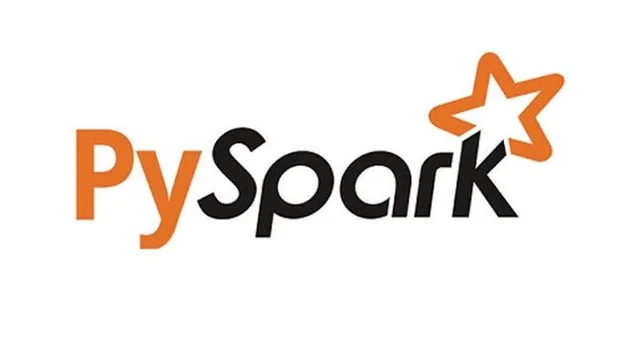
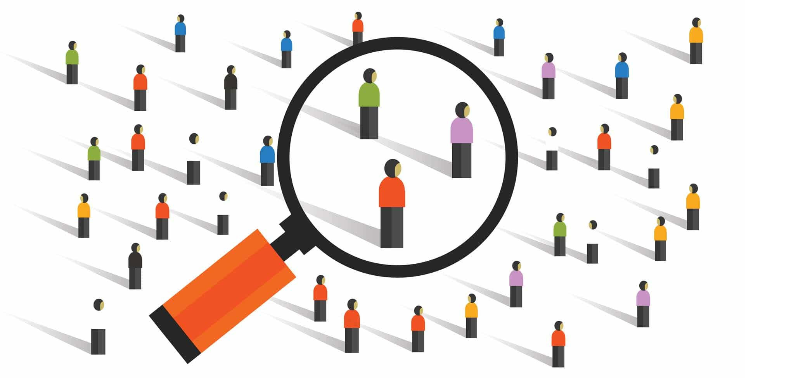

Outils et Technologies



Survolez un logiciel pour voir son utilisation.
Profil technique spécialisé en Science des Données, maîtrisant Python, SQL et les outils de datavisualisation.
Passionné par l'univers de la donnée depuis le collège, j'ai transformé cet intérêt en expertise technique au sein du BUT Science des Données à Lisieux. Spécialisé en Visualisation et Conceptions d'Outils décisionnels, je me spécialise dans la structuration de données et l'analyse de ces mêmes données.
Actuellement en 3ème année, je suis activement à la recherche d'une poursuite d'études en Master ou en Cycle d'Ingénieur pour la rentrée de septembre 2026.
Bases de données relationnelles et NoSQL, programmation Python et R, collecte automatisée Web Scraping et intégration en Data Warehouse.
Statistiques descriptives et inférentielles, méthodes de classification automatique, séries temporelles et processus complets de Data Mining.
Conception de reportings et tableaux de bord interactifs, sémiologie graphique, indicateurs de performance et argumentation technique en anglais.
Développement de solutions logicielles d'aide à la décision, analyse de l'environnement économique, gestion de projet via les SAE et validation par stage et portfolio.


Analyse des habitudes d'achat des lycéens. Mise en évidence de la domination d'Amazon (68%) via RStudio.
Découvrir le projet →Clustering des pratiques agricoles - Cohorte Agrican.
Découvrir le projet →
Analyse décisionnelle ou création d'outils de visualisation interactive.
Découvrir le projet →Description courte des missions principales effectuées durant le stage.
Description des responsabilités et des compétences acquises (rigueur, travail d'équipe).